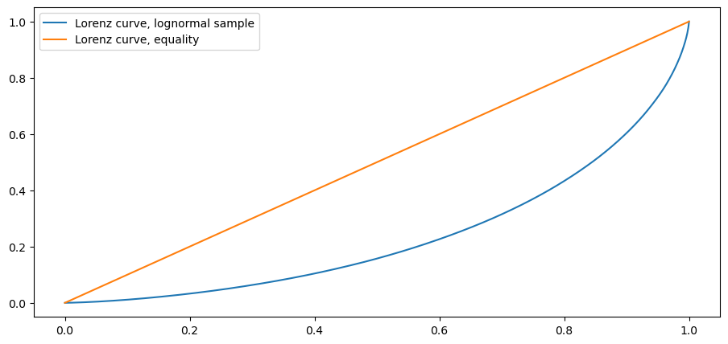
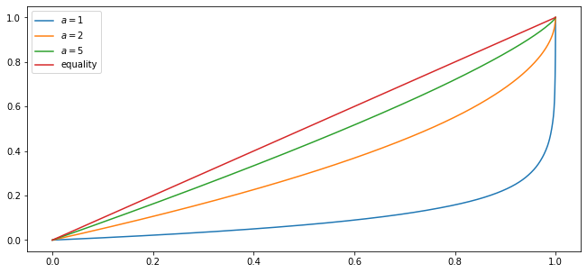
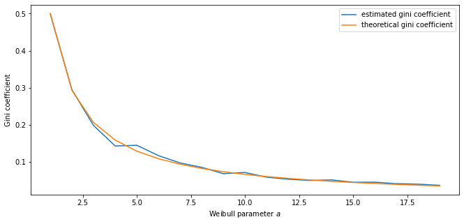
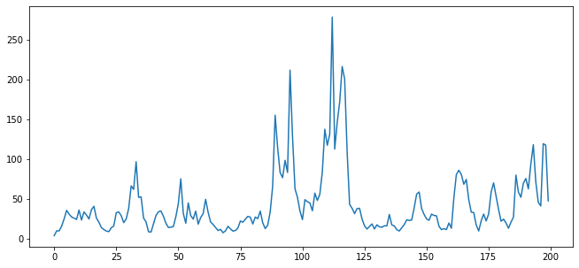
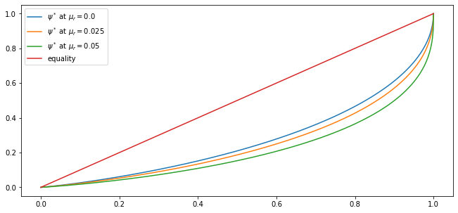
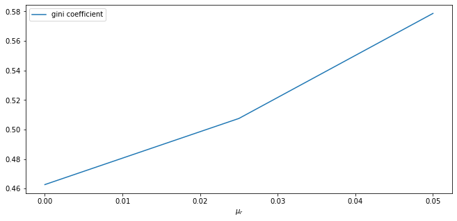
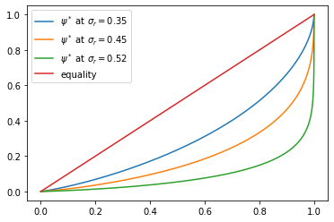
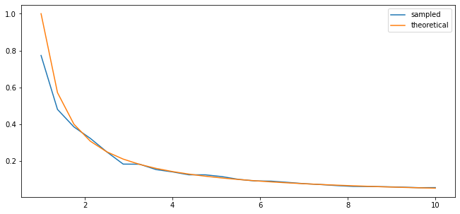
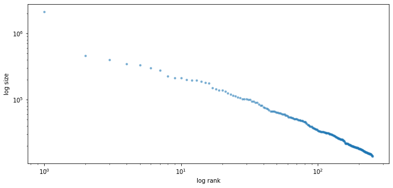

<!DOCTYPE html>

<html>
  <head>
    <meta charset="utf-8" />
    <meta name="viewport" content="width=device-width, initial-scale=1.0">
    <title>17. Wealth Distribution Dynamics &#8212; Quantitative Economics with Python</title>
    <link rel="stylesheet" href="_static/quantecon-book-theme.css" type="text/css" />
    <link rel="stylesheet" href="_static/pygments.css" type="text/css" />
    <link rel="stylesheet" type="text/css" href="_static/togglebutton.css" />
    <link rel="stylesheet" type="text/css" href="_static/copybutton.css" />
    <link rel="stylesheet" type="text/css" href="_static/mystnb.css" />
    <link rel="stylesheet" type="text/css" href="_static/sphinx-thebe.css" />
    <link rel="stylesheet" type="text/css" href="_static/panels-main.c949a650a448cc0ae9fd3441c0e17fb0.css" />
    <link rel="stylesheet" type="text/css" href="_static/panels-variables.06eb56fa6e07937060861dad626602ad.css" />
    <script id="documentation_options" data-url_root="./" src="_static/documentation_options.js"></script>
    <script src="_static/quantecon-book-theme.js"></script>
    <script src="_static/jquery.js"></script>
    <script src="_static/underscore.js"></script>
    <script src="_static/doctools.js"></script>
    <script src="_static/language_data.js"></script>
    <script src="_static/togglebutton.js"></script>
    <script src="_static/clipboard.min.js"></script>
    <script src="_static/copybutton.js"></script>
    <script src="_static/quantecon-book-theme.js"></script>
    <script >var togglebuttonSelector = '.toggle, .admonition.dropdown, .tag_hide_input div.cell_input, .tag_hide-input div.cell_input, .tag_hide_output div.cell_output, .tag_hide-output div.cell_output, .tag_hide_cell.cell, .tag_hide-cell.cell';</script>
    <script src="_static/sphinx-book-theme.d31b09fe5c1d09cb49b26a786de4a05d.js"></script>
    <script async="async" src="https://cdnjs.cloudflare.com/ajax/libs/mathjax/2.7.7/latest.js?config=TeX-AMS-MML_HTMLorMML"></script>
    <script type="text/x-mathjax-config">MathJax.Hub.Config({"tex2jax": {"inlineMath": [["\\(", "\\)"]], "displayMath": [["\\[", "\\]"]], "processRefs": false, "processEnvironments": false}})</script>
    <script async="async" src="https://unpkg.com/thebelab@latest/lib/index.js"></script>
    <script >
        const thebe_selector = ".thebe"
        const thebe_selector_input = "pre"
        const thebe_selector_output = ".output"
    </script>
    <script async="async" src="_static/sphinx-thebe.js"></script>
    <link rel="canonical" href="https://python.quantecon.org/wealth_dynamics.html" />
    <link rel="shortcut icon" href="_static/lectures-favicon.ico"/>
    <link rel="index" title="Index" href="genindex.html" />
    <link rel="search" title="Search" href="search.html" />
    <link rel="next" title="18. A First Look at the Kalman Filter" href="kalman.html" />
    <link rel="prev" title="16. Kesten Processes and Firm Dynamics" href="kesten_processes.html" />

<!-- Normal Meta Tags -->
<meta name="author" context="Thomas J. Sargent &amp; John Stachurski" />
<meta name="keywords" content="Python, QuantEcon, Quantitative Economics, Economics, Sloan, Alfred P. Sloan Foundation, Tom J. Sargent, John Stachurski" />
<meta name="description" content=This website presents a set of lectures on quantitative economic modeling, designed and written by Thomas J. Sargent and John Stachurski. />

<!-- Twitter tags -->
<meta name="twitter:card" content="summary" />
<meta name="twitter:site" content="@quantecon" />
<meta name="twitter:title" content="Wealth Distribution Dynamics"/>
<meta name="twitter:description" content="This website presents a set of lectures on quantitative economic modeling, designed and written by Thomas J. Sargent and John Stachurski.">
<meta name="twitter:creator" content="@quantecon">
<meta name="twitter:image" content="https://assets.quantecon.org/img/qe-twitter-logo.png">

<!-- Opengraph tags -->
<meta property="og:title" content="Wealth Distribution Dynamics" />
<meta property="og:type" content="website" />
<meta property="og:url" content="https://python.quantecon.org/wealth_dynamics.html" />
<meta property="og:image" content="https://assets.quantecon.org/img/qe-og-logo.png" />
<meta property="og:description" content="This website presents a set of lectures on quantitative economic modeling, designed and written by Thomas J. Sargent and John Stachurski." />
<meta property="og:site_name" content="Quantitative Economics with Python" />

<meta name="theme-color" content="#ffffff" />


  </head>
<body>


    <span id="top"></span>

    <div class="wrapper">

        <div class="main">

            <div class="page">

                <div class="page__toc">

                    <div class="inner">

                        
                        <div class="page__toc-header">
                            On this page
                        </div>


                        <nav id="bd-toc-nav" class="page__toc-nav">

                            <ul class="nav section-nav flex-column">
                                
                                <li class="nav-item toc-entry toc-h2">
                                    <a href="#overview" class="nav-link">Overview</a><ul class="nav section-nav flex-column">
                                        
                                <li class="nav-item toc-entry toc-h3">
                                    <a href="#a-note-on-assumptions" class="nav-link">A Note on Assumptions</a>
                                </li>
                                
                                    </ul>
                                </li>
                                
                                <li class="nav-item toc-entry toc-h2">
                                    <a href="#lorenz-curves-and-the-gini-coefficient" class="nav-link">Lorenz Curves and the Gini Coefficient</a><ul class="nav section-nav flex-column">
                                        
                                <li class="nav-item toc-entry toc-h3">
                                    <a href="#lorenz-curves" class="nav-link">Lorenz Curves</a>
                                </li>
                                
                                <li class="nav-item toc-entry toc-h3">
                                    <a href="#the-gini-coefficient" class="nav-link">The Gini Coefficient</a>
                                </li>
                                
                                    </ul>
                                </li>
                                
                                <li class="nav-item toc-entry toc-h2">
                                    <a href="#a-model-of-wealth-dynamics" class="nav-link">A Model of Wealth Dynamics</a>
                                </li>
                                
                                <li class="nav-item toc-entry toc-h2">
                                    <a href="#implementation" class="nav-link">Implementation</a>
                                </li>
                                
                                <li class="nav-item toc-entry toc-h2">
                                    <a href="#applications" class="nav-link">Applications</a><ul class="nav section-nav flex-column">
                                        
                                <li class="nav-item toc-entry toc-h3">
                                    <a href="#time-series" class="nav-link">Time Series</a>
                                </li>
                                
                                <li class="nav-item toc-entry toc-h3">
                                    <a href="#inequality-measures" class="nav-link">Inequality Measures</a>
                                </li>
                                
                                    </ul>
                                </li>
                                
                                <li class="nav-item toc-entry toc-h2">
                                    <a href="#exercises" class="nav-link">Exercises</a><ul class="nav section-nav flex-column">
                                        
                                <li class="nav-item toc-entry toc-h3">
                                    <a href="#exercise-1" class="nav-link">Exercise 1</a>
                                </li>
                                
                                <li class="nav-item toc-entry toc-h3">
                                    <a href="#exercise-2" class="nav-link">Exercise 2</a>
                                </li>
                                
                                    </ul>
                                </li>
                                
                                <li class="nav-item toc-entry toc-h2">
                                    <a href="#solutions" class="nav-link">Solutions</a><ul class="nav section-nav flex-column">
                                        
                                <li class="nav-item toc-entry toc-h3">
                                    <a href="#id2" class="nav-link">Exercise 1</a>
                                </li>
                                
                                <li class="nav-item toc-entry toc-h3">
                                    <a href="#id3" class="nav-link">Exercise 2</a>
                                </li>
                                
                                    </ul>
                                </li>
                                
                            </ul>

                            <p class="logo">
                                
                                    
                                    <a href=https://quantecon.org></a>
                                    
                                
                            </p>

                            <p class="powered">Powered by <a href="https://jupyterbook.org/">Jupyter Book</a></p>

                        </nav>

                        <div class="page__toc-footer">
                            
                            
                            <p><a href="#top"><strong>Back to top</strong></a></p>
                        </div>

                    </div>

                </div>

                <div class="page__header">

                    <div class="page__header-copy">

                        <p class="page__header-heading"><a href="intro.html">Quantitative Economics with Python</a></p>

                        <p class="page__header-subheading">Wealth Distribution Dynamics</p>

                    </div>

                    <p class="page__header-authors">Thomas J. Sargent & John Stachurski</p>

                </div> <!-- .page__header -->


                
                <main class="page__content" role="main">
                    
                    <div>
                        
  <div id="qe-notebook-header" align="right" style="text-align:right;">
        <a href="https://quantecon.org/" title="quantecon.org">
                
        </a>
</div><div class="section" id="wealth-distribution-dynamics">
<h1><a class="toc-backref" href="#id4"><span class="section-number">17. </span>Wealth Distribution Dynamics</a><a class="headerlink" href="#wealth-distribution-dynamics" title="Permalink to this headline">¶</a></h1>
<div class="contents topic" id="contents">
<p class="topic-title">Contents</p>
<ul class="simple">
<li><p><a class="reference internal" href="#wealth-distribution-dynamics" id="id4">Wealth Distribution Dynamics</a></p>
<ul>
<li><p><a class="reference internal" href="#overview" id="id5">Overview</a></p></li>
<li><p><a class="reference internal" href="#lorenz-curves-and-the-gini-coefficient" id="id6">Lorenz Curves and the Gini Coefficient</a></p></li>
<li><p><a class="reference internal" href="#a-model-of-wealth-dynamics" id="id7">A Model of Wealth Dynamics</a></p></li>
<li><p><a class="reference internal" href="#implementation" id="id8">Implementation</a></p></li>
<li><p><a class="reference internal" href="#applications" id="id9">Applications</a></p></li>
<li><p><a class="reference internal" href="#exercises" id="id10">Exercises</a></p></li>
<li><p><a class="reference internal" href="#solutions" id="id11">Solutions</a></p></li>
</ul>
</li>
</ul>
</div>
<p>In addition to what’s in Anaconda, this lecture will need the following libraries:</p>
<div class="cell tag_hide-output docutils container">
<div class="cell_input docutils container">
<div class="highlight-ipython3 notranslate"><div class="highlight"><pre><span></span><span class="o">!</span>conda install -y quantecon
</pre></div>
</div>
</div>
<div class="cell_output docutils container">
<div class="output stream highlight-myst-ansi notranslate"><div class="highlight"><pre><span></span>Collecting package metadata (current_repodata.json): - 
</pre></div>
</div>
<div class="output stream highlight-myst-ansi notranslate"><div class="highlight"><pre><span></span>\ 
</pre></div>
</div>
<div class="output stream highlight-myst-ansi notranslate"><div class="highlight"><pre><span></span>| 
</pre></div>
</div>
<div class="output stream highlight-myst-ansi notranslate"><div class="highlight"><pre><span></span>/ 
</pre></div>
</div>
<div class="output stream highlight-myst-ansi notranslate"><div class="highlight"><pre><span></span>- 
</pre></div>
</div>
<div class="output stream highlight-myst-ansi notranslate"><div class="highlight"><pre><span></span>\ 
</pre></div>
</div>
<div class="output stream highlight-myst-ansi notranslate"><div class="highlight"><pre><span></span>| 
</pre></div>
</div>
<div class="output stream highlight-myst-ansi notranslate"><div class="highlight"><pre><span></span>/ 
</pre></div>
</div>
<div class="output stream highlight-myst-ansi notranslate"><div class="highlight"><pre><span></span>- 
</pre></div>
</div>
<div class="output stream highlight-myst-ansi notranslate"><div class="highlight"><pre><span></span>done
Solving environment: | 
</pre></div>
</div>
<div class="output stream highlight-myst-ansi notranslate"><div class="highlight"><pre><span></span>/ 
</pre></div>
</div>
<div class="output stream highlight-myst-ansi notranslate"><div class="highlight"><pre><span></span>- 
</pre></div>
</div>
<div class="output stream highlight-myst-ansi notranslate"><div class="highlight"><pre><span></span>\ 
</pre></div>
</div>
<div class="output stream highlight-myst-ansi notranslate"><div class="highlight"><pre><span></span>| 
</pre></div>
</div>
<div class="output stream highlight-myst-ansi notranslate"><div class="highlight"><pre><span></span>/ 
</pre></div>
</div>
<div class="output stream highlight-myst-ansi notranslate"><div class="highlight"><pre><span></span>- 
</pre></div>
</div>
<div class="output stream highlight-myst-ansi notranslate"><div class="highlight"><pre><span></span>\ 
</pre></div>
</div>
<div class="output stream highlight-myst-ansi notranslate"><div class="highlight"><pre><span></span>| 
</pre></div>
</div>
<div class="output stream highlight-myst-ansi notranslate"><div class="highlight"><pre><span></span>/ 
</pre></div>
</div>
<div class="output stream highlight-myst-ansi notranslate"><div class="highlight"><pre><span></span>- 
</pre></div>
</div>
<div class="output stream highlight-myst-ansi notranslate"><div class="highlight"><pre><span></span>\ 
</pre></div>
</div>
<div class="output stream highlight-myst-ansi notranslate"><div class="highlight"><pre><span></span>| 
</pre></div>
</div>
<div class="output stream highlight-myst-ansi notranslate"><div class="highlight"><pre><span></span>/ 
</pre></div>
</div>
<div class="output stream highlight-myst-ansi notranslate"><div class="highlight"><pre><span></span>- 
</pre></div>
</div>
<div class="output stream highlight-myst-ansi notranslate"><div class="highlight"><pre><span></span>\ 
</pre></div>
</div>
<div class="output stream highlight-myst-ansi notranslate"><div class="highlight"><pre><span></span>done
</pre></div>
</div>
<div class="output stream highlight-myst-ansi notranslate"><div class="highlight"><pre><span></span># All requested packages already installed.
</pre></div>
</div>
</div>
</div>
<div class="section" id="overview">
<h2><a class="toc-backref" href="#id5"><span class="section-number">17.1. </span>Overview</a><a class="headerlink" href="#overview" title="Permalink to this headline">¶</a></h2>
<p>This notebook gives an introduction to wealth distribution dynamics, with a
focus on</p>
<ul class="simple">
<li><p>modeling and computing the wealth distribution via simulation,</p></li>
<li><p>measures of inequality such as the Lorenz curve and Gini coefficient, and</p></li>
<li><p>how inequality is affected by the properties of wage income and returns on assets.</p></li>
</ul>
<p>One interesting property of the wealth distribution we discuss is Pareto
tails.</p>
<p>The wealth distribution in many countries exhibits a Pareto tail</p>
<ul class="simple">
<li><p>See <a class="reference internal" href="heavy_tails.html"><span class="doc">this lecture</span></a> for a definition.</p></li>
<li><p>For a review of the empirical evidence, see, for example, <a class="bibtex reference internal" href="zreferences.html#benhabib2018skewed" id="id1">[BB18]</a>.</p></li>
</ul>
<p>This is consistent with high concentration of wealth amongst the richest households.</p>
<p>It also gives us a way to quantify such concentration, in terms of the tail index.</p>
<p>One question of interest is whether or not we can replicate Pareto tails from a relatively simple model.</p>
<div class="section" id="a-note-on-assumptions">
<h3><span class="section-number">17.1.1. </span>A Note on Assumptions<a class="headerlink" href="#a-note-on-assumptions" title="Permalink to this headline">¶</a></h3>
<p>The evolution of wealth for any given household depends on their
savings behavior.</p>
<p>Modeling such behavior will form an important part of this lecture series.</p>
<p>However, in this particular lecture, we will be content with rather ad hoc (but plausible) savings rules.</p>
<p>We do this to more easily explore the implications of different specifications of income dynamics and investment returns.</p>
<p>At the same time, all of the techniques discussed here can be plugged into models that use optimization to obtain savings rules.</p>
<p>We will use the following imports.</p>
<div class="cell docutils container">
<div class="cell_input docutils container">
<div class="highlight-ipython3 notranslate"><div class="highlight"><pre><span></span><span class="kn">import</span> <span class="nn">numpy</span> <span class="k">as</span> <span class="nn">np</span>
<span class="kn">import</span> <span class="nn">matplotlib.pyplot</span> <span class="k">as</span> <span class="nn">plt</span>
<span class="o">%</span><span class="k">matplotlib</span> inline

<span class="kn">import</span> <span class="nn">quantecon</span> <span class="k">as</span> <span class="nn">qe</span>
<span class="kn">from</span> <span class="nn">numba</span> <span class="kn">import</span> <span class="n">njit</span><span class="p">,</span> <span class="n">float64</span><span class="p">,</span> <span class="n">prange</span>
<span class="kn">from</span> <span class="nn">numba.experimental</span> <span class="kn">import</span> <span class="n">jitclass</span>
</pre></div>
</div>
</div>
</div>
</div>
</div>
<div class="section" id="lorenz-curves-and-the-gini-coefficient">
<h2><a class="toc-backref" href="#id6"><span class="section-number">17.2. </span>Lorenz Curves and the Gini Coefficient</a><a class="headerlink" href="#lorenz-curves-and-the-gini-coefficient" title="Permalink to this headline">¶</a></h2>
<p>Before we investigate wealth dynamics, we briefly review some measures of
inequality.</p>
<div class="section" id="lorenz-curves">
<h3><span class="section-number">17.2.1. </span>Lorenz Curves<a class="headerlink" href="#lorenz-curves" title="Permalink to this headline">¶</a></h3>
<p>One popular graphical measure of inequality is the <a class="reference external" href="https://en.wikipedia.org/wiki/Lorenz_curve">Lorenz curve</a>.</p>
<p>The package <a class="reference external" href="https://github.com/QuantEcon/QuantEcon.py">QuantEcon.py</a>, already imported above, contains a function to compute Lorenz curves.</p>
<p>To illustrate, suppose that</p>
<div class="cell docutils container">
<div class="cell_input docutils container">
<div class="highlight-ipython3 notranslate"><div class="highlight"><pre><span></span><span class="n">n</span> <span class="o">=</span> <span class="mi">10_000</span>                      <span class="c1"># size of sample</span>
<span class="n">w</span> <span class="o">=</span> <span class="n">np</span><span class="o">.</span><span class="n">exp</span><span class="p">(</span><span class="n">np</span><span class="o">.</span><span class="n">random</span><span class="o">.</span><span class="n">randn</span><span class="p">(</span><span class="n">n</span><span class="p">))</span>  <span class="c1"># lognormal draws</span>
</pre></div>
</div>
</div>
</div>
<p>is data representing the wealth of 10,000 households.</p>
<p>We can compute and plot the Lorenz curve as follows:</p>
<div class="cell docutils container">
<div class="cell_input docutils container">
<div class="highlight-ipython3 notranslate"><div class="highlight"><pre><span></span><span class="n">f_vals</span><span class="p">,</span> <span class="n">l_vals</span> <span class="o">=</span> <span class="n">qe</span><span class="o">.</span><span class="n">lorenz_curve</span><span class="p">(</span><span class="n">w</span><span class="p">)</span>

<span class="n">fig</span><span class="p">,</span> <span class="n">ax</span> <span class="o">=</span> <span class="n">plt</span><span class="o">.</span><span class="n">subplots</span><span class="p">()</span>
<span class="n">ax</span><span class="o">.</span><span class="n">plot</span><span class="p">(</span><span class="n">f_vals</span><span class="p">,</span> <span class="n">l_vals</span><span class="p">,</span> <span class="n">label</span><span class="o">=</span><span class="s1">&#39;Lorenz curve, lognormal sample&#39;</span><span class="p">)</span>
<span class="n">ax</span><span class="o">.</span><span class="n">plot</span><span class="p">(</span><span class="n">f_vals</span><span class="p">,</span> <span class="n">f_vals</span><span class="p">,</span> <span class="n">label</span><span class="o">=</span><span class="s1">&#39;Lorenz curve, equality&#39;</span><span class="p">)</span>
<span class="n">ax</span><span class="o">.</span><span class="n">legend</span><span class="p">()</span>
<span class="n">plt</span><span class="o">.</span><span class="n">show</span><span class="p">()</span>
</pre></div>
</div>
</div>
<div class="cell_output docutils container">

</div>
</div>
<p>This curve can be understood as follows: if point <span class="math notranslate nohighlight">\((x,y)\)</span> lies on the curve, it means that, collectively, the bottom <span class="math notranslate nohighlight">\((100x)\%\)</span> of the population holds <span class="math notranslate nohighlight">\((100y)\%\)</span> of the wealth.</p>
<p>The “equality” line is the 45 degree line (which might not be exactly 45
degrees in the figure, depending on the aspect ratio).</p>
<p>A sample that produces this line exhibits perfect equality.</p>
<p>The other line in the figure is the Lorenz curve for the lognormal sample, which deviates significantly from perfect equality.</p>
<p>For example, the bottom 80% of the population holds around 40% of total wealth.</p>
<p>Here is another example, which shows how the Lorenz curve shifts as the
underlying distribution changes.</p>
<p>We generate 10,000 observations using the Pareto distribution with a range of
parameters, and then compute the Lorenz curve corresponding to each set of
observations.</p>
<div class="cell docutils container">
<div class="cell_input docutils container">
<div class="highlight-ipython3 notranslate"><div class="highlight"><pre><span></span><span class="n">a_vals</span> <span class="o">=</span> <span class="p">(</span><span class="mi">1</span><span class="p">,</span> <span class="mi">2</span><span class="p">,</span> <span class="mi">5</span><span class="p">)</span>              <span class="c1"># Pareto tail index</span>
<span class="n">n</span> <span class="o">=</span> <span class="mi">10_000</span>                      <span class="c1"># size of each sample</span>
<span class="n">fig</span><span class="p">,</span> <span class="n">ax</span> <span class="o">=</span> <span class="n">plt</span><span class="o">.</span><span class="n">subplots</span><span class="p">()</span>
<span class="k">for</span> <span class="n">a</span> <span class="ow">in</span> <span class="n">a_vals</span><span class="p">:</span>
    <span class="n">u</span> <span class="o">=</span> <span class="n">np</span><span class="o">.</span><span class="n">random</span><span class="o">.</span><span class="n">uniform</span><span class="p">(</span><span class="n">size</span><span class="o">=</span><span class="n">n</span><span class="p">)</span>
    <span class="n">y</span> <span class="o">=</span> <span class="n">u</span><span class="o">**</span><span class="p">(</span><span class="o">-</span><span class="mi">1</span><span class="o">/</span><span class="n">a</span><span class="p">)</span>               <span class="c1"># distributed as Pareto with tail index a</span>
    <span class="n">f_vals</span><span class="p">,</span> <span class="n">l_vals</span> <span class="o">=</span> <span class="n">qe</span><span class="o">.</span><span class="n">lorenz_curve</span><span class="p">(</span><span class="n">y</span><span class="p">)</span>
    <span class="n">ax</span><span class="o">.</span><span class="n">plot</span><span class="p">(</span><span class="n">f_vals</span><span class="p">,</span> <span class="n">l_vals</span><span class="p">,</span> <span class="n">label</span><span class="o">=</span><span class="sa">f</span><span class="s1">&#39;$a = </span><span class="si">{</span><span class="n">a</span><span class="si">}</span><span class="s1">$&#39;</span><span class="p">)</span>
<span class="n">ax</span><span class="o">.</span><span class="n">plot</span><span class="p">(</span><span class="n">f_vals</span><span class="p">,</span> <span class="n">f_vals</span><span class="p">,</span> <span class="n">label</span><span class="o">=</span><span class="s1">&#39;equality&#39;</span><span class="p">)</span>
<span class="n">ax</span><span class="o">.</span><span class="n">legend</span><span class="p">()</span>
<span class="n">plt</span><span class="o">.</span><span class="n">show</span><span class="p">()</span>
</pre></div>
</div>
</div>
<div class="cell_output docutils container">

</div>
</div>
<p>You can see that, as the tail parameter of the Pareto distribution increases, inequality decreases.</p>
<p>This is to be expected, because a higher tail index implies less weight in the tail of the Pareto distribution.</p>
</div>
<div class="section" id="the-gini-coefficient">
<h3><span class="section-number">17.2.2. </span>The Gini Coefficient<a class="headerlink" href="#the-gini-coefficient" title="Permalink to this headline">¶</a></h3>
<p>The definition and interpretation of the Gini coefficient can be found on the corresponding <a class="reference external" href="https://en.wikipedia.org/wiki/Gini_coefficient">Wikipedia page</a>.</p>
<p>A value of 0 indicates perfect equality (corresponding the case where the
Lorenz curve matches the 45 degree line) and a value of 1 indicates complete
inequality (all wealth held by the richest household).</p>
<p>The <a class="reference external" href="https://github.com/QuantEcon/QuantEcon.py">QuantEcon.py</a> library contains a function to calculate the Gini coefficient.</p>
<p>We can test it on the Weibull distribution with parameter <span class="math notranslate nohighlight">\(a\)</span>, where the Gini coefficient is known to be</p>
<div class="math notranslate nohighlight">
\[
G = 1 - 2^{-1/a}
\]</div>
<p>Let’s see if the Gini coefficient computed from a simulated sample matches
this at each fixed value of <span class="math notranslate nohighlight">\(a\)</span>.</p>
<div class="cell docutils container">
<div class="cell_input docutils container">
<div class="highlight-ipython3 notranslate"><div class="highlight"><pre><span></span><span class="n">a_vals</span> <span class="o">=</span> <span class="nb">range</span><span class="p">(</span><span class="mi">1</span><span class="p">,</span> <span class="mi">20</span><span class="p">)</span>
<span class="n">ginis</span> <span class="o">=</span> <span class="p">[]</span>
<span class="n">ginis_theoretical</span> <span class="o">=</span> <span class="p">[]</span>
<span class="n">n</span> <span class="o">=</span> <span class="mi">100</span>

<span class="n">fig</span><span class="p">,</span> <span class="n">ax</span> <span class="o">=</span> <span class="n">plt</span><span class="o">.</span><span class="n">subplots</span><span class="p">()</span>
<span class="k">for</span> <span class="n">a</span> <span class="ow">in</span> <span class="n">a_vals</span><span class="p">:</span>
    <span class="n">y</span> <span class="o">=</span> <span class="n">np</span><span class="o">.</span><span class="n">random</span><span class="o">.</span><span class="n">weibull</span><span class="p">(</span><span class="n">a</span><span class="p">,</span> <span class="n">size</span><span class="o">=</span><span class="n">n</span><span class="p">)</span>
    <span class="n">ginis</span><span class="o">.</span><span class="n">append</span><span class="p">(</span><span class="n">qe</span><span class="o">.</span><span class="n">gini_coefficient</span><span class="p">(</span><span class="n">y</span><span class="p">))</span>
    <span class="n">ginis_theoretical</span><span class="o">.</span><span class="n">append</span><span class="p">(</span><span class="mi">1</span> <span class="o">-</span> <span class="mi">2</span><span class="o">**</span><span class="p">(</span><span class="o">-</span><span class="mi">1</span><span class="o">/</span><span class="n">a</span><span class="p">))</span>
<span class="n">ax</span><span class="o">.</span><span class="n">plot</span><span class="p">(</span><span class="n">a_vals</span><span class="p">,</span> <span class="n">ginis</span><span class="p">,</span> <span class="n">label</span><span class="o">=</span><span class="s1">&#39;estimated gini coefficient&#39;</span><span class="p">)</span>
<span class="n">ax</span><span class="o">.</span><span class="n">plot</span><span class="p">(</span><span class="n">a_vals</span><span class="p">,</span> <span class="n">ginis_theoretical</span><span class="p">,</span> <span class="n">label</span><span class="o">=</span><span class="s1">&#39;theoretical gini coefficient&#39;</span><span class="p">)</span>
<span class="n">ax</span><span class="o">.</span><span class="n">legend</span><span class="p">()</span>
<span class="n">ax</span><span class="o">.</span><span class="n">set_xlabel</span><span class="p">(</span><span class="s2">&quot;Weibull parameter $a$&quot;</span><span class="p">)</span>
<span class="n">ax</span><span class="o">.</span><span class="n">set_ylabel</span><span class="p">(</span><span class="s2">&quot;Gini coefficient&quot;</span><span class="p">)</span>
<span class="n">plt</span><span class="o">.</span><span class="n">show</span><span class="p">()</span>
</pre></div>
</div>
</div>
<div class="cell_output docutils container">

</div>
</div>
<p>The simulation shows that the fit is good.</p>
</div>
</div>
<div class="section" id="a-model-of-wealth-dynamics">
<h2><a class="toc-backref" href="#id7"><span class="section-number">17.3. </span>A Model of Wealth Dynamics</a><a class="headerlink" href="#a-model-of-wealth-dynamics" title="Permalink to this headline">¶</a></h2>
<p>Having discussed inequality measures, let us now turn to wealth dynamics.</p>
<p>The model we will study is</p>
<div class="math notranslate nohighlight" id="equation-wealth-dynam-ah">
<span class="eqno">(17.1)<a class="headerlink" href="#equation-wealth-dynam-ah" title="Permalink to this equation">¶</a></span>\[w_{t+1} = (1 + r_{t+1}) s(w_t) + y_{t+1}\]</div>
<p>where</p>
<ul class="simple">
<li><p><span class="math notranslate nohighlight">\(w_t\)</span> is wealth at time <span class="math notranslate nohighlight">\(t\)</span> for a given household,</p></li>
<li><p><span class="math notranslate nohighlight">\(r_t\)</span> is the rate of return of financial assets,</p></li>
<li><p><span class="math notranslate nohighlight">\(y_t\)</span> is current non-financial (e.g., labor) income and</p></li>
<li><p><span class="math notranslate nohighlight">\(s(w_t)\)</span> is current wealth net of consumption</p></li>
</ul>
<p>Letting <span class="math notranslate nohighlight">\(\{z_t\}\)</span> be a correlated state process of the form</p>
<div class="math notranslate nohighlight">
\[
z_{t+1} = a z_t + b + \sigma_z \epsilon_{t+1}
\]</div>
<p>we’ll assume that</p>
<div class="math notranslate nohighlight">
\[
R_t := 1 + r_t = c_r \exp(z_t) + \exp(\mu_r + \sigma_r \xi_t)
\]</div>
<p>and</p>
<div class="math notranslate nohighlight">
\[
y_t = c_y \exp(z_t) + \exp(\mu_y + \sigma_y \zeta_t)
\]</div>
<p>Here <span class="math notranslate nohighlight">\(\{ (\epsilon_t, \xi_t, \zeta_t) \}\)</span> is IID and standard
normal in <span class="math notranslate nohighlight">\(\mathbb R^3\)</span>.</p>
<p>The value of <span class="math notranslate nohighlight">\(c_r\)</span> should be close to zero, since rates of return
on assets do not exhibit large trends.</p>
<p>When we simulate a population of households, we will assume all shocks are idiosyncratic (i.e.,  specific to individual households and independent across them).</p>
<p>Regarding the savings function <span class="math notranslate nohighlight">\(s\)</span>, our default model will be</p>
<div class="math notranslate nohighlight" id="equation-sav-ah">
<span class="eqno">(17.2)<a class="headerlink" href="#equation-sav-ah" title="Permalink to this equation">¶</a></span>\[s(w) = s_0 w \cdot \mathbb 1\{w \geq \hat w\}\]</div>
<p>where <span class="math notranslate nohighlight">\(s_0\)</span> is a positive constant.</p>
<p>Thus, for <span class="math notranslate nohighlight">\(w &lt; \hat w\)</span>, the household saves nothing. For
<span class="math notranslate nohighlight">\(w \geq \bar w\)</span>, the household saves a fraction <span class="math notranslate nohighlight">\(s_0\)</span> of
their wealth.</p>
<p>We are using something akin to a fixed savings rate model, while
acknowledging that low wealth households tend to save very little.</p>
</div>
<div class="section" id="implementation">
<h2><a class="toc-backref" href="#id8"><span class="section-number">17.4. </span>Implementation</a><a class="headerlink" href="#implementation" title="Permalink to this headline">¶</a></h2>
<p>Here’s some type information to help Numba.</p>
<div class="cell docutils container">
<div class="cell_input docutils container">
<div class="highlight-ipython3 notranslate"><div class="highlight"><pre><span></span><span class="n">wealth_dynamics_data</span> <span class="o">=</span> <span class="p">[</span>
    <span class="p">(</span><span class="s1">&#39;w_hat&#39;</span><span class="p">,</span>  <span class="n">float64</span><span class="p">),</span>    <span class="c1"># savings parameter</span>
    <span class="p">(</span><span class="s1">&#39;s_0&#39;</span><span class="p">,</span>    <span class="n">float64</span><span class="p">),</span>    <span class="c1"># savings parameter</span>
    <span class="p">(</span><span class="s1">&#39;c_y&#39;</span><span class="p">,</span>    <span class="n">float64</span><span class="p">),</span>    <span class="c1"># labor income parameter</span>
    <span class="p">(</span><span class="s1">&#39;μ_y&#39;</span><span class="p">,</span>    <span class="n">float64</span><span class="p">),</span>    <span class="c1"># labor income paraemter</span>
    <span class="p">(</span><span class="s1">&#39;σ_y&#39;</span><span class="p">,</span>    <span class="n">float64</span><span class="p">),</span>    <span class="c1"># labor income parameter</span>
    <span class="p">(</span><span class="s1">&#39;c_r&#39;</span><span class="p">,</span>    <span class="n">float64</span><span class="p">),</span>    <span class="c1"># rate of return parameter</span>
    <span class="p">(</span><span class="s1">&#39;μ_r&#39;</span><span class="p">,</span>    <span class="n">float64</span><span class="p">),</span>    <span class="c1"># rate of return parameter</span>
    <span class="p">(</span><span class="s1">&#39;σ_r&#39;</span><span class="p">,</span>    <span class="n">float64</span><span class="p">),</span>    <span class="c1"># rate of return parameter</span>
    <span class="p">(</span><span class="s1">&#39;a&#39;</span><span class="p">,</span>      <span class="n">float64</span><span class="p">),</span>    <span class="c1"># aggregate shock parameter</span>
    <span class="p">(</span><span class="s1">&#39;b&#39;</span><span class="p">,</span>      <span class="n">float64</span><span class="p">),</span>    <span class="c1"># aggregate shock parameter</span>
    <span class="p">(</span><span class="s1">&#39;σ_z&#39;</span><span class="p">,</span>    <span class="n">float64</span><span class="p">),</span>    <span class="c1"># aggregate shock parameter</span>
    <span class="p">(</span><span class="s1">&#39;z_mean&#39;</span><span class="p">,</span> <span class="n">float64</span><span class="p">),</span>    <span class="c1"># mean of z process</span>
    <span class="p">(</span><span class="s1">&#39;z_var&#39;</span><span class="p">,</span> <span class="n">float64</span><span class="p">),</span>     <span class="c1"># variance of z process</span>
    <span class="p">(</span><span class="s1">&#39;y_mean&#39;</span><span class="p">,</span> <span class="n">float64</span><span class="p">),</span>    <span class="c1"># mean of y process</span>
    <span class="p">(</span><span class="s1">&#39;R_mean&#39;</span><span class="p">,</span> <span class="n">float64</span><span class="p">)</span>     <span class="c1"># mean of R process</span>
<span class="p">]</span>
</pre></div>
</div>
</div>
</div>
<p>Here’s a class that stores instance data and implements methods that update
the aggregate state and household wealth.</p>
<div class="cell docutils container">
<div class="cell_input docutils container">
<div class="highlight-ipython3 notranslate"><div class="highlight"><pre><span></span><span class="nd">@jitclass</span><span class="p">(</span><span class="n">wealth_dynamics_data</span><span class="p">)</span>
<span class="k">class</span> <span class="nc">WealthDynamics</span><span class="p">:</span>

    <span class="k">def</span> <span class="fm">__init__</span><span class="p">(</span><span class="bp">self</span><span class="p">,</span>
                 <span class="n">w_hat</span><span class="o">=</span><span class="mf">1.0</span><span class="p">,</span>
                 <span class="n">s_0</span><span class="o">=</span><span class="mf">0.75</span><span class="p">,</span>
                 <span class="n">c_y</span><span class="o">=</span><span class="mf">1.0</span><span class="p">,</span>
                 <span class="n">μ_y</span><span class="o">=</span><span class="mf">1.0</span><span class="p">,</span>
                 <span class="n">σ_y</span><span class="o">=</span><span class="mf">0.2</span><span class="p">,</span>
                 <span class="n">c_r</span><span class="o">=</span><span class="mf">0.05</span><span class="p">,</span>
                 <span class="n">μ_r</span><span class="o">=</span><span class="mf">0.1</span><span class="p">,</span>
                 <span class="n">σ_r</span><span class="o">=</span><span class="mf">0.5</span><span class="p">,</span>
                 <span class="n">a</span><span class="o">=</span><span class="mf">0.5</span><span class="p">,</span>
                 <span class="n">b</span><span class="o">=</span><span class="mf">0.0</span><span class="p">,</span>
                 <span class="n">σ_z</span><span class="o">=</span><span class="mf">0.1</span><span class="p">):</span>

        <span class="bp">self</span><span class="o">.</span><span class="n">w_hat</span><span class="p">,</span> <span class="bp">self</span><span class="o">.</span><span class="n">s_0</span> <span class="o">=</span> <span class="n">w_hat</span><span class="p">,</span> <span class="n">s_0</span>
        <span class="bp">self</span><span class="o">.</span><span class="n">c_y</span><span class="p">,</span> <span class="bp">self</span><span class="o">.</span><span class="n">μ_y</span><span class="p">,</span> <span class="bp">self</span><span class="o">.</span><span class="n">σ_y</span> <span class="o">=</span> <span class="n">c_y</span><span class="p">,</span> <span class="n">μ_y</span><span class="p">,</span> <span class="n">σ_y</span>
        <span class="bp">self</span><span class="o">.</span><span class="n">c_r</span><span class="p">,</span> <span class="bp">self</span><span class="o">.</span><span class="n">μ_r</span><span class="p">,</span> <span class="bp">self</span><span class="o">.</span><span class="n">σ_r</span> <span class="o">=</span> <span class="n">c_r</span><span class="p">,</span> <span class="n">μ_r</span><span class="p">,</span> <span class="n">σ_r</span>
        <span class="bp">self</span><span class="o">.</span><span class="n">a</span><span class="p">,</span> <span class="bp">self</span><span class="o">.</span><span class="n">b</span><span class="p">,</span> <span class="bp">self</span><span class="o">.</span><span class="n">σ_z</span> <span class="o">=</span> <span class="n">a</span><span class="p">,</span> <span class="n">b</span><span class="p">,</span> <span class="n">σ_z</span>

        <span class="c1"># Record stationary moments</span>
        <span class="bp">self</span><span class="o">.</span><span class="n">z_mean</span> <span class="o">=</span> <span class="n">b</span> <span class="o">/</span> <span class="p">(</span><span class="mi">1</span> <span class="o">-</span> <span class="n">a</span><span class="p">)</span>
        <span class="bp">self</span><span class="o">.</span><span class="n">z_var</span> <span class="o">=</span> <span class="n">σ_z</span><span class="o">**</span><span class="mi">2</span> <span class="o">/</span> <span class="p">(</span><span class="mi">1</span> <span class="o">-</span> <span class="n">a</span><span class="o">**</span><span class="mi">2</span><span class="p">)</span>
        <span class="n">exp_z_mean</span> <span class="o">=</span> <span class="n">np</span><span class="o">.</span><span class="n">exp</span><span class="p">(</span><span class="bp">self</span><span class="o">.</span><span class="n">z_mean</span> <span class="o">+</span> <span class="bp">self</span><span class="o">.</span><span class="n">z_var</span> <span class="o">/</span> <span class="mi">2</span><span class="p">)</span>
        <span class="bp">self</span><span class="o">.</span><span class="n">R_mean</span> <span class="o">=</span> <span class="n">c_r</span> <span class="o">*</span> <span class="n">exp_z_mean</span> <span class="o">+</span> <span class="n">np</span><span class="o">.</span><span class="n">exp</span><span class="p">(</span><span class="n">μ_r</span> <span class="o">+</span> <span class="n">σ_r</span><span class="o">**</span><span class="mi">2</span> <span class="o">/</span> <span class="mi">2</span><span class="p">)</span>
        <span class="bp">self</span><span class="o">.</span><span class="n">y_mean</span> <span class="o">=</span> <span class="n">c_y</span> <span class="o">*</span> <span class="n">exp_z_mean</span> <span class="o">+</span> <span class="n">np</span><span class="o">.</span><span class="n">exp</span><span class="p">(</span><span class="n">μ_y</span> <span class="o">+</span> <span class="n">σ_y</span><span class="o">**</span><span class="mi">2</span> <span class="o">/</span> <span class="mi">2</span><span class="p">)</span>

        <span class="c1"># Test a stability condition that ensures wealth does not diverge</span>
        <span class="c1"># to infinity.</span>
        <span class="n">α</span> <span class="o">=</span> <span class="bp">self</span><span class="o">.</span><span class="n">R_mean</span> <span class="o">*</span> <span class="bp">self</span><span class="o">.</span><span class="n">s_0</span>
        <span class="k">if</span> <span class="n">α</span> <span class="o">&gt;=</span> <span class="mi">1</span><span class="p">:</span>
            <span class="k">raise</span> <span class="ne">ValueError</span><span class="p">(</span><span class="s2">&quot;Stability condition failed.&quot;</span><span class="p">)</span>

    <span class="k">def</span> <span class="nf">parameters</span><span class="p">(</span><span class="bp">self</span><span class="p">):</span>
        <span class="sd">&quot;&quot;&quot;</span>
<span class="sd">        Collect and return parameters.</span>
<span class="sd">        &quot;&quot;&quot;</span>
        <span class="n">parameters</span> <span class="o">=</span> <span class="p">(</span><span class="bp">self</span><span class="o">.</span><span class="n">w_hat</span><span class="p">,</span> <span class="bp">self</span><span class="o">.</span><span class="n">s_0</span><span class="p">,</span>
                      <span class="bp">self</span><span class="o">.</span><span class="n">c_y</span><span class="p">,</span> <span class="bp">self</span><span class="o">.</span><span class="n">μ_y</span><span class="p">,</span> <span class="bp">self</span><span class="o">.</span><span class="n">σ_y</span><span class="p">,</span>
                      <span class="bp">self</span><span class="o">.</span><span class="n">c_r</span><span class="p">,</span> <span class="bp">self</span><span class="o">.</span><span class="n">μ_r</span><span class="p">,</span> <span class="bp">self</span><span class="o">.</span><span class="n">σ_r</span><span class="p">,</span>
                      <span class="bp">self</span><span class="o">.</span><span class="n">a</span><span class="p">,</span> <span class="bp">self</span><span class="o">.</span><span class="n">b</span><span class="p">,</span> <span class="bp">self</span><span class="o">.</span><span class="n">σ_z</span><span class="p">)</span>
        <span class="k">return</span> <span class="n">parameters</span>

    <span class="k">def</span> <span class="nf">update_states</span><span class="p">(</span><span class="bp">self</span><span class="p">,</span> <span class="n">w</span><span class="p">,</span> <span class="n">z</span><span class="p">):</span>
        <span class="sd">&quot;&quot;&quot;</span>
<span class="sd">        Update one period, given current wealth w and persistent</span>
<span class="sd">        state z.</span>
<span class="sd">        &quot;&quot;&quot;</span>

        <span class="c1"># Simplify names</span>
        <span class="n">params</span> <span class="o">=</span> <span class="bp">self</span><span class="o">.</span><span class="n">parameters</span><span class="p">()</span>
        <span class="n">w_hat</span><span class="p">,</span> <span class="n">s_0</span><span class="p">,</span> <span class="n">c_y</span><span class="p">,</span> <span class="n">μ_y</span><span class="p">,</span> <span class="n">σ_y</span><span class="p">,</span> <span class="n">c_r</span><span class="p">,</span> <span class="n">μ_r</span><span class="p">,</span> <span class="n">σ_r</span><span class="p">,</span> <span class="n">a</span><span class="p">,</span> <span class="n">b</span><span class="p">,</span> <span class="n">σ_z</span> <span class="o">=</span> <span class="n">params</span>
        <span class="n">zp</span> <span class="o">=</span> <span class="n">a</span> <span class="o">*</span> <span class="n">z</span> <span class="o">+</span> <span class="n">b</span> <span class="o">+</span> <span class="n">σ_z</span> <span class="o">*</span> <span class="n">np</span><span class="o">.</span><span class="n">random</span><span class="o">.</span><span class="n">randn</span><span class="p">()</span>

        <span class="c1"># Update wealth</span>
        <span class="n">y</span> <span class="o">=</span> <span class="n">c_y</span> <span class="o">*</span> <span class="n">np</span><span class="o">.</span><span class="n">exp</span><span class="p">(</span><span class="n">zp</span><span class="p">)</span> <span class="o">+</span> <span class="n">np</span><span class="o">.</span><span class="n">exp</span><span class="p">(</span><span class="n">μ_y</span> <span class="o">+</span> <span class="n">σ_y</span> <span class="o">*</span> <span class="n">np</span><span class="o">.</span><span class="n">random</span><span class="o">.</span><span class="n">randn</span><span class="p">())</span>
        <span class="n">wp</span> <span class="o">=</span> <span class="n">y</span>
        <span class="k">if</span> <span class="n">w</span> <span class="o">&gt;=</span> <span class="n">w_hat</span><span class="p">:</span>
            <span class="n">R</span> <span class="o">=</span> <span class="n">c_r</span> <span class="o">*</span> <span class="n">np</span><span class="o">.</span><span class="n">exp</span><span class="p">(</span><span class="n">zp</span><span class="p">)</span> <span class="o">+</span> <span class="n">np</span><span class="o">.</span><span class="n">exp</span><span class="p">(</span><span class="n">μ_r</span> <span class="o">+</span> <span class="n">σ_r</span> <span class="o">*</span> <span class="n">np</span><span class="o">.</span><span class="n">random</span><span class="o">.</span><span class="n">randn</span><span class="p">())</span>
            <span class="n">wp</span> <span class="o">+=</span> <span class="n">R</span> <span class="o">*</span> <span class="n">s_0</span> <span class="o">*</span> <span class="n">w</span>
        <span class="k">return</span> <span class="n">wp</span><span class="p">,</span> <span class="n">zp</span>
</pre></div>
</div>
</div>
</div>
<p>Here’s function to simulate the time series of wealth for in individual households.</p>
<div class="cell docutils container">
<div class="cell_input docutils container">
<div class="highlight-ipython3 notranslate"><div class="highlight"><pre><span></span><span class="nd">@njit</span>
<span class="k">def</span> <span class="nf">wealth_time_series</span><span class="p">(</span><span class="n">wdy</span><span class="p">,</span> <span class="n">w_0</span><span class="p">,</span> <span class="n">n</span><span class="p">):</span>
    <span class="sd">&quot;&quot;&quot;</span>
<span class="sd">    Generate a single time series of length n for wealth given</span>
<span class="sd">    initial value w_0.</span>

<span class="sd">    The initial persistent state z_0 for each household is drawn from</span>
<span class="sd">    the stationary distribution of the AR(1) process.</span>

<span class="sd">        * wdy: an instance of WealthDynamics</span>
<span class="sd">        * w_0: scalar</span>
<span class="sd">        * n: int</span>


<span class="sd">    &quot;&quot;&quot;</span>
    <span class="n">z</span> <span class="o">=</span> <span class="n">wdy</span><span class="o">.</span><span class="n">z_mean</span> <span class="o">+</span> <span class="n">np</span><span class="o">.</span><span class="n">sqrt</span><span class="p">(</span><span class="n">wdy</span><span class="o">.</span><span class="n">z_var</span><span class="p">)</span> <span class="o">*</span> <span class="n">np</span><span class="o">.</span><span class="n">random</span><span class="o">.</span><span class="n">randn</span><span class="p">()</span>
    <span class="n">w</span> <span class="o">=</span> <span class="n">np</span><span class="o">.</span><span class="n">empty</span><span class="p">(</span><span class="n">n</span><span class="p">)</span>
    <span class="n">w</span><span class="p">[</span><span class="mi">0</span><span class="p">]</span> <span class="o">=</span> <span class="n">w_0</span>
    <span class="k">for</span> <span class="n">t</span> <span class="ow">in</span> <span class="nb">range</span><span class="p">(</span><span class="n">n</span><span class="o">-</span><span class="mi">1</span><span class="p">):</span>
        <span class="n">w</span><span class="p">[</span><span class="n">t</span><span class="o">+</span><span class="mi">1</span><span class="p">],</span> <span class="n">z</span> <span class="o">=</span> <span class="n">wdy</span><span class="o">.</span><span class="n">update_states</span><span class="p">(</span><span class="n">w</span><span class="p">[</span><span class="n">t</span><span class="p">],</span> <span class="n">z</span><span class="p">)</span>
    <span class="k">return</span> <span class="n">w</span>
</pre></div>
</div>
</div>
</div>
<p>Now here’s function to simulate a cross section of households forward in time.</p>
<p>Note the use of parallelization to speed up computation.</p>
<div class="cell docutils container">
<div class="cell_input docutils container">
<div class="highlight-ipython3 notranslate"><div class="highlight"><pre><span></span><span class="nd">@njit</span><span class="p">(</span><span class="n">parallel</span><span class="o">=</span><span class="kc">True</span><span class="p">)</span>
<span class="k">def</span> <span class="nf">update_cross_section</span><span class="p">(</span><span class="n">wdy</span><span class="p">,</span> <span class="n">w_distribution</span><span class="p">,</span> <span class="n">shift_length</span><span class="o">=</span><span class="mi">500</span><span class="p">):</span>
    <span class="sd">&quot;&quot;&quot;</span>
<span class="sd">    Shifts a cross-section of household forward in time</span>

<span class="sd">    * wdy: an instance of WealthDynamics</span>
<span class="sd">    * w_distribution: array_like, represents current cross-section</span>

<span class="sd">    Takes a current distribution of wealth values as w_distribution</span>
<span class="sd">    and updates each w_t in w_distribution to w_{t+j}, where</span>
<span class="sd">    j = shift_length.</span>

<span class="sd">    Returns the new distribution.</span>

<span class="sd">    &quot;&quot;&quot;</span>
    <span class="n">new_distribution</span> <span class="o">=</span> <span class="n">np</span><span class="o">.</span><span class="n">empty_like</span><span class="p">(</span><span class="n">w_distribution</span><span class="p">)</span>

    <span class="c1"># Update each household</span>
    <span class="k">for</span> <span class="n">i</span> <span class="ow">in</span> <span class="n">prange</span><span class="p">(</span><span class="nb">len</span><span class="p">(</span><span class="n">new_distribution</span><span class="p">)):</span>
        <span class="n">z</span> <span class="o">=</span> <span class="n">wdy</span><span class="o">.</span><span class="n">z_mean</span> <span class="o">+</span> <span class="n">np</span><span class="o">.</span><span class="n">sqrt</span><span class="p">(</span><span class="n">wdy</span><span class="o">.</span><span class="n">z_var</span><span class="p">)</span> <span class="o">*</span> <span class="n">np</span><span class="o">.</span><span class="n">random</span><span class="o">.</span><span class="n">randn</span><span class="p">()</span>
        <span class="n">w</span> <span class="o">=</span> <span class="n">w_distribution</span><span class="p">[</span><span class="n">i</span><span class="p">]</span>
        <span class="k">for</span> <span class="n">t</span> <span class="ow">in</span> <span class="nb">range</span><span class="p">(</span><span class="n">shift_length</span><span class="o">-</span><span class="mi">1</span><span class="p">):</span>
            <span class="n">w</span><span class="p">,</span> <span class="n">z</span> <span class="o">=</span> <span class="n">wdy</span><span class="o">.</span><span class="n">update_states</span><span class="p">(</span><span class="n">w</span><span class="p">,</span> <span class="n">z</span><span class="p">)</span>
        <span class="n">new_distribution</span><span class="p">[</span><span class="n">i</span><span class="p">]</span> <span class="o">=</span> <span class="n">w</span>
    <span class="k">return</span> <span class="n">new_distribution</span>
</pre></div>
</div>
</div>
</div>
<p>Parallelization is very effective in the function above because the time path
of each household can be calculated independently once the path for the
aggregate state is known.</p>
</div>
<div class="section" id="applications">
<h2><a class="toc-backref" href="#id9"><span class="section-number">17.5. </span>Applications</a><a class="headerlink" href="#applications" title="Permalink to this headline">¶</a></h2>
<p>Let’s try simulating the model at different parameter values and investigate
the implications for the wealth distribution.</p>
<div class="section" id="time-series">
<h3><span class="section-number">17.5.1. </span>Time Series<a class="headerlink" href="#time-series" title="Permalink to this headline">¶</a></h3>
<p>Let’s look at the wealth dynamics of an individual household.</p>
<div class="cell docutils container">
<div class="cell_input docutils container">
<div class="highlight-ipython3 notranslate"><div class="highlight"><pre><span></span><span class="n">wdy</span> <span class="o">=</span> <span class="n">WealthDynamics</span><span class="p">()</span>

<span class="n">ts_length</span> <span class="o">=</span> <span class="mi">200</span>
<span class="n">w</span> <span class="o">=</span> <span class="n">wealth_time_series</span><span class="p">(</span><span class="n">wdy</span><span class="p">,</span> <span class="n">wdy</span><span class="o">.</span><span class="n">y_mean</span><span class="p">,</span> <span class="n">ts_length</span><span class="p">)</span>

<span class="n">fig</span><span class="p">,</span> <span class="n">ax</span> <span class="o">=</span> <span class="n">plt</span><span class="o">.</span><span class="n">subplots</span><span class="p">()</span>
<span class="n">ax</span><span class="o">.</span><span class="n">plot</span><span class="p">(</span><span class="n">w</span><span class="p">)</span>
<span class="n">plt</span><span class="o">.</span><span class="n">show</span><span class="p">()</span>
</pre></div>
</div>
</div>
<div class="cell_output docutils container">

</div>
</div>
<p>Notice the large spikes in wealth over time.</p>
<p>Such spikes are similar to what we observed in time series when <a class="reference internal" href="kesten_processes.html"><span class="doc">we studied Kesten processes</span></a>.</p>
</div>
<div class="section" id="inequality-measures">
<h3><span class="section-number">17.5.2. </span>Inequality Measures<a class="headerlink" href="#inequality-measures" title="Permalink to this headline">¶</a></h3>
<p>Let’s look at how inequality varies with returns on financial assets.</p>
<p>The next function generates a cross section and then computes the Lorenz
curve and Gini coefficient.</p>
<div class="cell docutils container">
<div class="cell_input docutils container">
<div class="highlight-ipython3 notranslate"><div class="highlight"><pre><span></span><span class="k">def</span> <span class="nf">generate_lorenz_and_gini</span><span class="p">(</span><span class="n">wdy</span><span class="p">,</span> <span class="n">num_households</span><span class="o">=</span><span class="mi">100_000</span><span class="p">,</span> <span class="n">T</span><span class="o">=</span><span class="mi">500</span><span class="p">):</span>
    <span class="sd">&quot;&quot;&quot;</span>
<span class="sd">    Generate the Lorenz curve data and gini coefficient corresponding to a</span>
<span class="sd">    WealthDynamics mode by simulating num_households forward to time T.</span>
<span class="sd">    &quot;&quot;&quot;</span>
    <span class="n">ψ_0</span> <span class="o">=</span> <span class="n">np</span><span class="o">.</span><span class="n">ones</span><span class="p">(</span><span class="n">num_households</span><span class="p">)</span> <span class="o">*</span> <span class="n">wdy</span><span class="o">.</span><span class="n">y_mean</span>
    <span class="n">z_0</span> <span class="o">=</span> <span class="n">wdy</span><span class="o">.</span><span class="n">z_mean</span>

    <span class="n">ψ_star</span> <span class="o">=</span> <span class="n">update_cross_section</span><span class="p">(</span><span class="n">wdy</span><span class="p">,</span> <span class="n">ψ_0</span><span class="p">,</span> <span class="n">shift_length</span><span class="o">=</span><span class="n">T</span><span class="p">)</span>
    <span class="k">return</span> <span class="n">qe</span><span class="o">.</span><span class="n">gini_coefficient</span><span class="p">(</span><span class="n">ψ_star</span><span class="p">),</span> <span class="n">qe</span><span class="o">.</span><span class="n">lorenz_curve</span><span class="p">(</span><span class="n">ψ_star</span><span class="p">)</span>
</pre></div>
</div>
</div>
</div>
<p>Now we investigate how the Lorenz curves associated with the wealth distribution change as return to savings varies.</p>
<p>The code below plots Lorenz curves for three different values of <span class="math notranslate nohighlight">\(\mu_r\)</span>.</p>
<p>If you are running this yourself, note that it will take one or two minutes to execute.</p>
<p>This is unavoidable because we are executing a CPU intensive task.</p>
<p>In fact the code, which is JIT compiled and parallelized, runs extremely fast relative to the number of computations.</p>
<div class="cell docutils container">
<div class="cell_input docutils container">
<div class="highlight-ipython3 notranslate"><div class="highlight"><pre><span></span><span class="n">fig</span><span class="p">,</span> <span class="n">ax</span> <span class="o">=</span> <span class="n">plt</span><span class="o">.</span><span class="n">subplots</span><span class="p">()</span>
<span class="n">μ_r_vals</span> <span class="o">=</span> <span class="p">(</span><span class="mf">0.0</span><span class="p">,</span> <span class="mf">0.025</span><span class="p">,</span> <span class="mf">0.05</span><span class="p">)</span>
<span class="n">gini_vals</span> <span class="o">=</span> <span class="p">[]</span>

<span class="k">for</span> <span class="n">μ_r</span> <span class="ow">in</span> <span class="n">μ_r_vals</span><span class="p">:</span>
    <span class="n">wdy</span> <span class="o">=</span> <span class="n">WealthDynamics</span><span class="p">(</span><span class="n">μ_r</span><span class="o">=</span><span class="n">μ_r</span><span class="p">)</span>
    <span class="n">gv</span><span class="p">,</span> <span class="p">(</span><span class="n">f_vals</span><span class="p">,</span> <span class="n">l_vals</span><span class="p">)</span> <span class="o">=</span> <span class="n">generate_lorenz_and_gini</span><span class="p">(</span><span class="n">wdy</span><span class="p">)</span>
    <span class="n">ax</span><span class="o">.</span><span class="n">plot</span><span class="p">(</span><span class="n">f_vals</span><span class="p">,</span> <span class="n">l_vals</span><span class="p">,</span> <span class="n">label</span><span class="o">=</span><span class="sa">f</span><span class="s1">&#39;$\psi^*$ at $\mu_r = </span><span class="si">{</span><span class="n">μ_r</span><span class="si">:</span><span class="s1">0.2</span><span class="si">}</span><span class="s1">$&#39;</span><span class="p">)</span>
    <span class="n">gini_vals</span><span class="o">.</span><span class="n">append</span><span class="p">(</span><span class="n">gv</span><span class="p">)</span>

<span class="n">ax</span><span class="o">.</span><span class="n">plot</span><span class="p">(</span><span class="n">f_vals</span><span class="p">,</span> <span class="n">f_vals</span><span class="p">,</span> <span class="n">label</span><span class="o">=</span><span class="s1">&#39;equality&#39;</span><span class="p">)</span>
<span class="n">ax</span><span class="o">.</span><span class="n">legend</span><span class="p">(</span><span class="n">loc</span><span class="o">=</span><span class="s2">&quot;upper left&quot;</span><span class="p">)</span>
<span class="n">plt</span><span class="o">.</span><span class="n">show</span><span class="p">()</span>
</pre></div>
</div>
</div>
<div class="cell_output docutils container">

</div>
</div>
<p>The Lorenz curve shifts downwards as returns on financial income rise, indicating a rise in inequality.</p>
<p>We will look at this again via the Gini coefficient immediately below, but
first consider the following image of our system resources when the code above
is executing:</p>
<div class="figure align-default" id="htop-again">
<a class="reference internal image-reference" href="_images/htop_again.png"></a>
</div>
<p>Notice how effectively Numba has implemented multithreading for this routine:
all 8 CPUs on our workstation are running at maximum capacity (even though
four of them are virtual).</p>
<p>Since the code is both efficiently JIT compiled and fully parallelized, it’s
close to impossible to make this sequence of tasks run faster without changing
hardware.</p>
<p>Now let’s check the Gini coefficient.</p>
<div class="cell docutils container">
<div class="cell_input docutils container">
<div class="highlight-ipython3 notranslate"><div class="highlight"><pre><span></span><span class="n">fig</span><span class="p">,</span> <span class="n">ax</span> <span class="o">=</span> <span class="n">plt</span><span class="o">.</span><span class="n">subplots</span><span class="p">()</span>
<span class="n">ax</span><span class="o">.</span><span class="n">plot</span><span class="p">(</span><span class="n">μ_r_vals</span><span class="p">,</span> <span class="n">gini_vals</span><span class="p">,</span> <span class="n">label</span><span class="o">=</span><span class="s1">&#39;gini coefficient&#39;</span><span class="p">)</span>
<span class="n">ax</span><span class="o">.</span><span class="n">set_xlabel</span><span class="p">(</span><span class="s2">&quot;$\mu_r$&quot;</span><span class="p">)</span>
<span class="n">ax</span><span class="o">.</span><span class="n">legend</span><span class="p">()</span>
<span class="n">plt</span><span class="o">.</span><span class="n">show</span><span class="p">()</span>
</pre></div>
</div>
</div>
<div class="cell_output docutils container">

</div>
</div>
<p>Once again, we see that inequality increases as returns on financial income
rise.</p>
<p>Let’s finish this section by investigating what happens when we change the
volatility term <span class="math notranslate nohighlight">\(\sigma_r\)</span> in financial returns.</p>
<div class="cell docutils container">
<div class="cell_input docutils container">
<div class="highlight-ipython3 notranslate"><div class="highlight"><pre><span></span><span class="n">fig</span><span class="p">,</span> <span class="n">ax</span> <span class="o">=</span> <span class="n">plt</span><span class="o">.</span><span class="n">subplots</span><span class="p">()</span>
<span class="n">σ_r_vals</span> <span class="o">=</span> <span class="p">(</span><span class="mf">0.35</span><span class="p">,</span> <span class="mf">0.45</span><span class="p">,</span> <span class="mf">0.52</span><span class="p">)</span>
<span class="n">gini_vals</span> <span class="o">=</span> <span class="p">[]</span>

<span class="k">for</span> <span class="n">σ_r</span> <span class="ow">in</span> <span class="n">σ_r_vals</span><span class="p">:</span>
    <span class="n">wdy</span> <span class="o">=</span> <span class="n">WealthDynamics</span><span class="p">(</span><span class="n">σ_r</span><span class="o">=</span><span class="n">σ_r</span><span class="p">)</span>
    <span class="n">gv</span><span class="p">,</span> <span class="p">(</span><span class="n">f_vals</span><span class="p">,</span> <span class="n">l_vals</span><span class="p">)</span> <span class="o">=</span> <span class="n">generate_lorenz_and_gini</span><span class="p">(</span><span class="n">wdy</span><span class="p">)</span>
    <span class="n">ax</span><span class="o">.</span><span class="n">plot</span><span class="p">(</span><span class="n">f_vals</span><span class="p">,</span> <span class="n">l_vals</span><span class="p">,</span> <span class="n">label</span><span class="o">=</span><span class="sa">f</span><span class="s1">&#39;$\psi^*$ at $\sigma_r = </span><span class="si">{</span><span class="n">σ_r</span><span class="si">:</span><span class="s1">0.2</span><span class="si">}</span><span class="s1">$&#39;</span><span class="p">)</span>
    <span class="n">gini_vals</span><span class="o">.</span><span class="n">append</span><span class="p">(</span><span class="n">gv</span><span class="p">)</span>

<span class="n">ax</span><span class="o">.</span><span class="n">plot</span><span class="p">(</span><span class="n">f_vals</span><span class="p">,</span> <span class="n">f_vals</span><span class="p">,</span> <span class="n">label</span><span class="o">=</span><span class="s1">&#39;equality&#39;</span><span class="p">)</span>
<span class="n">ax</span><span class="o">.</span><span class="n">legend</span><span class="p">(</span><span class="n">loc</span><span class="o">=</span><span class="s2">&quot;upper left&quot;</span><span class="p">)</span>
<span class="n">plt</span><span class="o">.</span><span class="n">show</span><span class="p">()</span>
</pre></div>
</div>
</div>
<div class="cell_output docutils container">

</div>
</div>
<p>We see that greater volatility has the effect of increasing inequality in this model.</p>
</div>
</div>
<div class="section" id="exercises">
<h2><a class="toc-backref" href="#id10"><span class="section-number">17.6. </span>Exercises</a><a class="headerlink" href="#exercises" title="Permalink to this headline">¶</a></h2>
<div class="section" id="exercise-1">
<h3><span class="section-number">17.6.1. </span>Exercise 1<a class="headerlink" href="#exercise-1" title="Permalink to this headline">¶</a></h3>
<p>For a wealth or income distribution with Pareto tail, a higher tail index suggests lower inequality.</p>
<p>Indeed, it is possible to prove that the Gini coefficient of the Pareto
distribution with tail index <span class="math notranslate nohighlight">\(a\)</span> is <span class="math notranslate nohighlight">\(1/(2a - 1)\)</span>.</p>
<p>To the extent that you can, confirm this by simulation.</p>
<p>In particular, generate a plot of the Gini coefficient against the tail index
using both the theoretical value just given and the value computed from a sample via <code class="docutils literal notranslate"><span class="pre">qe.gini_coefficient</span></code>.</p>
<p>For the values of the tail index, use <code class="docutils literal notranslate"><span class="pre">a_vals</span> <span class="pre">=</span> <span class="pre">np.linspace(1,</span> <span class="pre">10,</span> <span class="pre">25)</span></code>.</p>
<p>Use sample of size 1,000 for each <span class="math notranslate nohighlight">\(a\)</span> and the sampling method for generating Pareto draws employed in the discussion of Lorenz curves for the Pareto distribution.</p>
<p>To the extend that you can, interpret the monotone relationship between the
Gini index and <span class="math notranslate nohighlight">\(a\)</span>.</p>
</div>
<div class="section" id="exercise-2">
<h3><span class="section-number">17.6.2. </span>Exercise 2<a class="headerlink" href="#exercise-2" title="Permalink to this headline">¶</a></h3>
<p>The wealth process <a class="reference internal" href="#equation-wealth-dynam-ah">(17.1)</a> is similar to a <a class="reference internal" href="kesten_processes.html"><span class="doc">Kesten process</span></a>.</p>
<p>This is because, according to <a class="reference internal" href="#equation-sav-ah">(17.2)</a>, savings is constant for all wealth levels above <span class="math notranslate nohighlight">\(\hat w\)</span>.</p>
<p>When savings is constant, the wealth process has the same quasi-linear
structure as a Kesten process, with multiplicative and additive shocks.</p>
<p>The Kesten–Goldie theorem tells us that Kesten processes have Pareto tails under a range of parameterizations.</p>
<p>The theorem does not directly apply here, since savings is not always constant and since the multiplicative and additive terms in <a class="reference internal" href="#equation-wealth-dynam-ah">(17.1)</a> are not IID.</p>
<p>At the same time, given the similarities, perhaps Pareto tails will arise.</p>
<p>To test this, run a simulation that generates a cross-section of wealth and
generate a rank-size plot.</p>
<p>If you like, you can use the function <code class="docutils literal notranslate"><span class="pre">rank_size</span></code> from the <code class="docutils literal notranslate"><span class="pre">quantecon</span></code> library (documentation <a class="reference external" href="https://quanteconpy.readthedocs.io/en/latest/tools/inequality.html#quantecon.inequality.rank_size">here</a>).</p>
<p>In viewing the plot, remember that Pareto tails generate a straight line.  Is
this what you see?</p>
<p>For sample size and initial conditions, use</p>
<div class="cell docutils container">
<div class="cell_input docutils container">
<div class="highlight-ipython3 notranslate"><div class="highlight"><pre><span></span><span class="n">num_households</span> <span class="o">=</span> <span class="mi">250_000</span>
<span class="n">T</span> <span class="o">=</span> <span class="mi">500</span>                                      <span class="c1"># shift forward T periods</span>
<span class="n">ψ_0</span> <span class="o">=</span> <span class="n">np</span><span class="o">.</span><span class="n">ones</span><span class="p">(</span><span class="n">num_households</span><span class="p">)</span> <span class="o">*</span> <span class="n">wdy</span><span class="o">.</span><span class="n">y_mean</span>   <span class="c1"># initial distribution</span>
<span class="n">z_0</span> <span class="o">=</span> <span class="n">wdy</span><span class="o">.</span><span class="n">z_mean</span>
</pre></div>
</div>
</div>
</div>
</div>
</div>
<div class="section" id="solutions">
<h2><a class="toc-backref" href="#id11"><span class="section-number">17.7. </span>Solutions</a><a class="headerlink" href="#solutions" title="Permalink to this headline">¶</a></h2>
<p>Here is one solution, which produces a good match between theory and
simulation.</p>
<div class="section" id="id2">
<h3><span class="section-number">17.7.1. </span>Exercise 1<a class="headerlink" href="#id2" title="Permalink to this headline">¶</a></h3>
<div class="cell docutils container">
<div class="cell_input docutils container">
<div class="highlight-ipython3 notranslate"><div class="highlight"><pre><span></span><span class="n">a_vals</span> <span class="o">=</span> <span class="n">np</span><span class="o">.</span><span class="n">linspace</span><span class="p">(</span><span class="mi">1</span><span class="p">,</span> <span class="mi">10</span><span class="p">,</span> <span class="mi">25</span><span class="p">)</span>  <span class="c1"># Pareto tail index</span>
<span class="n">ginis</span> <span class="o">=</span> <span class="n">np</span><span class="o">.</span><span class="n">empty_like</span><span class="p">(</span><span class="n">a_vals</span><span class="p">)</span>

<span class="n">n</span> <span class="o">=</span> <span class="mi">1000</span>                         <span class="c1"># size of each sample</span>
<span class="n">fig</span><span class="p">,</span> <span class="n">ax</span> <span class="o">=</span> <span class="n">plt</span><span class="o">.</span><span class="n">subplots</span><span class="p">()</span>
<span class="k">for</span> <span class="n">i</span><span class="p">,</span> <span class="n">a</span> <span class="ow">in</span> <span class="nb">enumerate</span><span class="p">(</span><span class="n">a_vals</span><span class="p">):</span>
    <span class="n">y</span> <span class="o">=</span> <span class="n">np</span><span class="o">.</span><span class="n">random</span><span class="o">.</span><span class="n">uniform</span><span class="p">(</span><span class="n">size</span><span class="o">=</span><span class="n">n</span><span class="p">)</span><span class="o">**</span><span class="p">(</span><span class="o">-</span><span class="mi">1</span><span class="o">/</span><span class="n">a</span><span class="p">)</span>
    <span class="n">ginis</span><span class="p">[</span><span class="n">i</span><span class="p">]</span> <span class="o">=</span> <span class="n">qe</span><span class="o">.</span><span class="n">gini_coefficient</span><span class="p">(</span><span class="n">y</span><span class="p">)</span>
<span class="n">ax</span><span class="o">.</span><span class="n">plot</span><span class="p">(</span><span class="n">a_vals</span><span class="p">,</span> <span class="n">ginis</span><span class="p">,</span> <span class="n">label</span><span class="o">=</span><span class="s1">&#39;sampled&#39;</span><span class="p">)</span>
<span class="n">ax</span><span class="o">.</span><span class="n">plot</span><span class="p">(</span><span class="n">a_vals</span><span class="p">,</span> <span class="mi">1</span><span class="o">/</span><span class="p">(</span><span class="mi">2</span><span class="o">*</span><span class="n">a_vals</span> <span class="o">-</span> <span class="mi">1</span><span class="p">),</span> <span class="n">label</span><span class="o">=</span><span class="s1">&#39;theoretical&#39;</span><span class="p">)</span>
<span class="n">ax</span><span class="o">.</span><span class="n">legend</span><span class="p">()</span>
<span class="n">plt</span><span class="o">.</span><span class="n">show</span><span class="p">()</span>
</pre></div>
</div>
</div>
<div class="cell_output docutils container">

</div>
</div>
<p>In general, for a Pareto distribution, a higher tail index implies less weight
in the right hand tail.</p>
<p>This means less extreme values for wealth and hence more equality.</p>
<p>More equality translates to a lower Gini index.</p>
</div>
<div class="section" id="id3">
<h3><span class="section-number">17.7.2. </span>Exercise 2<a class="headerlink" href="#id3" title="Permalink to this headline">¶</a></h3>
<p>First let’s generate the distribution:</p>
<div class="cell docutils container">
<div class="cell_input docutils container">
<div class="highlight-ipython3 notranslate"><div class="highlight"><pre><span></span><span class="n">num_households</span> <span class="o">=</span> <span class="mi">250_000</span>
<span class="n">T</span> <span class="o">=</span> <span class="mi">500</span>  <span class="c1"># how far to shift forward in time</span>
<span class="n">ψ_0</span> <span class="o">=</span> <span class="n">np</span><span class="o">.</span><span class="n">ones</span><span class="p">(</span><span class="n">num_households</span><span class="p">)</span> <span class="o">*</span> <span class="n">wdy</span><span class="o">.</span><span class="n">y_mean</span>
<span class="n">z_0</span> <span class="o">=</span> <span class="n">wdy</span><span class="o">.</span><span class="n">z_mean</span>

<span class="n">ψ_star</span> <span class="o">=</span> <span class="n">update_cross_section</span><span class="p">(</span><span class="n">wdy</span><span class="p">,</span> <span class="n">ψ_0</span><span class="p">,</span> <span class="n">shift_length</span><span class="o">=</span><span class="n">T</span><span class="p">)</span>
</pre></div>
</div>
</div>
</div>
<p>Now let’s see the rank-size plot:</p>
<div class="cell docutils container">
<div class="cell_input docutils container">
<div class="highlight-ipython3 notranslate"><div class="highlight"><pre><span></span><span class="n">fig</span><span class="p">,</span> <span class="n">ax</span> <span class="o">=</span> <span class="n">plt</span><span class="o">.</span><span class="n">subplots</span><span class="p">()</span>

<span class="n">rank_data</span><span class="p">,</span> <span class="n">size_data</span> <span class="o">=</span> <span class="n">qe</span><span class="o">.</span><span class="n">rank_size</span><span class="p">(</span><span class="n">ψ_star</span><span class="p">,</span> <span class="n">c</span><span class="o">=</span><span class="mf">0.001</span><span class="p">)</span>
<span class="n">ax</span><span class="o">.</span><span class="n">loglog</span><span class="p">(</span><span class="n">rank_data</span><span class="p">,</span> <span class="n">size_data</span><span class="p">,</span> <span class="s1">&#39;o&#39;</span><span class="p">,</span> <span class="n">markersize</span><span class="o">=</span><span class="mf">3.0</span><span class="p">,</span> <span class="n">alpha</span><span class="o">=</span><span class="mf">0.5</span><span class="p">)</span>
<span class="n">ax</span><span class="o">.</span><span class="n">set_xlabel</span><span class="p">(</span><span class="s2">&quot;log rank&quot;</span><span class="p">)</span>
<span class="n">ax</span><span class="o">.</span><span class="n">set_ylabel</span><span class="p">(</span><span class="s2">&quot;log size&quot;</span><span class="p">)</span>

<span class="n">plt</span><span class="o">.</span><span class="n">show</span><span class="p">()</span>
</pre></div>
</div>
</div>
<div class="cell_output docutils container">

</div>
</div>
</div>
</div>
</div>

    <script type="text/x-thebe-config">
    {
        requestKernel: true,
        binderOptions: {
            repo: "binder-examples/jupyter-stacks-datascience",
            ref: "master",
        },
        codeMirrorConfig: {
            theme: "abcdef",
            mode: "python"
        },
        kernelOptions: {
            kernelName: "python3",
            path: "./."
        },
        predefinedOutput: true
    }
    </script>
    <script>kernelName = 'python3'</script>

                    </div>
                    
                </main> <!-- .page__content -->
                


                <footer class="page__footer">

                    <p><a href="https://creativecommons.org/licenses/by-sa/4.0/"></a></p>

                    <p>Creative Commons License &ndash; This work is licensed under a Creative Commons Attribution-ShareAlike 4.0 International.</p>

                </footer> <!-- .page__footer -->

            </div> <!-- .page -->

            
            <div class="sidebar bd-sidebar inactive" id="site-navigation">

                <div class="sidebar__header">


                    Contents

                </div>

                <nav class="sidebar__nav" id="sidebar-nav" aria-label="Main navigation">
                    <p class="caption">
 <span class="caption-text">
  Tools and Techniques
 </span>
</p>
<ul class="nav sidenav_l1">
 <li class="toctree-l1">
  <a class="reference internal" href="geom_series.html">
   1. Geometric Series for Elementary Economics
  </a>
 </li>
 <li class="toctree-l1">
  <a class="reference internal" href="multi_hyper.html">
   2. Multivariate Hypergeometric Distribution
  </a>
 </li>
 <li class="toctree-l1">
  <a class="reference internal" href="sir_model.html">
   3. Modeling COVID 19
  </a>
 </li>
 <li class="toctree-l1">
  <a class="reference internal" href="linear_algebra.html">
   4. Linear Algebra
  </a>
 </li>
 <li class="toctree-l1">
  <a class="reference internal" href="complex_and_trig.html">
   5. Complex Numbers and Trigonometry
  </a>
 </li>
 <li class="toctree-l1">
  <a class="reference internal" href="lln_clt.html">
   6. LLN and CLT
  </a>
 </li>
 <li class="toctree-l1">
  <a class="reference internal" href="heavy_tails.html">
   7. Heavy-Tailed Distributions
  </a>
 </li>
 <li class="toctree-l1">
  <a class="reference internal" href="multivariate_normal.html">
   8. Multivariate Normal Distribution
  </a>
 </li>
 <li class="toctree-l1">
  <a class="reference internal" href="time_series_with_matrices.html">
   9. Univariate Time Series with Matrix Algebra
  </a>
 </li>
</ul>
<p class="caption">
 <span class="caption-text">
  Introduction to Dynamics
 </span>
</p>
<ul class="current nav sidenav_l1">
 <li class="toctree-l1">
  <a class="reference internal" href="scalar_dynam.html">
   10. Dynamics in One Dimension
  </a>
 </li>
 <li class="toctree-l1">
  <a class="reference internal" href="ar1_processes.html">
   11. AR1 Processes
  </a>
 </li>
 <li class="toctree-l1">
  <a class="reference internal" href="finite_markov.html">
   12. Finite Markov Chains
  </a>
 </li>
 <li class="toctree-l1">
  <a class="reference internal" href="inventory_dynamics.html">
   13. Inventory Dynamics
  </a>
 </li>
 <li class="toctree-l1">
  <a class="reference internal" href="linear_models.html">
   14. Linear State Space Models
  </a>
 </li>
 <li class="toctree-l1">
  <a class="reference internal" href="samuelson.html">
   15. Application: The Samuelson Multiplier-Accelerator
  </a>
 </li>
 <li class="toctree-l1">
  <a class="reference internal" href="kesten_processes.html">
   16. Kesten Processes and Firm Dynamics
  </a>
 </li>
 <li class="toctree-l1 current active">
  <a class="current reference internal" href="#">
   17. Wealth Distribution Dynamics
  </a>
 </li>
 <li class="toctree-l1">
  <a class="reference internal" href="kalman.html">
   18. A First Look at the Kalman Filter
  </a>
 </li>
 <li class="toctree-l1">
  <a class="reference internal" href="short_path.html">
   19. Shortest Paths
  </a>
 </li>
 <li class="toctree-l1">
  <a class="reference internal" href="cass_koopmans_1.html">
   20. Cass-Koopmans Planning Problem
  </a>
 </li>
 <li class="toctree-l1">
  <a class="reference internal" href="cass_koopmans_2.html">
   21. Cass-Koopmans Competitive Equilibrium
  </a>
 </li>
</ul>
<p class="caption">
 <span class="caption-text">
  Search
 </span>
</p>
<ul class="nav sidenav_l1">
 <li class="toctree-l1">
  <a class="reference internal" href="mccall_model.html">
   22. Job Search I: The McCall Search Model
  </a>
 </li>
 <li class="toctree-l1">
  <a class="reference internal" href="mccall_model_with_separation.html">
   23. Job Search II: Search and Separation
  </a>
 </li>
 <li class="toctree-l1">
  <a class="reference internal" href="mccall_fitted_vfi.html">
   24. Job Search III: Fitted Value Function Iteration
  </a>
 </li>
 <li class="toctree-l1">
  <a class="reference internal" href="mccall_correlated.html">
   25. Job Search IV: Correlated Wage Offers
  </a>
 </li>
 <li class="toctree-l1">
  <a class="reference internal" href="career.html">
   26. Job Search V: Modeling Career Choice
  </a>
 </li>
 <li class="toctree-l1">
  <a class="reference internal" href="jv.html">
   27. Job Search VI: On-the-Job Search
  </a>
 </li>
</ul>
<p class="caption">
 <span class="caption-text">
  Consumption, Savings and Growth
 </span>
</p>
<ul class="nav sidenav_l1">
 <li class="toctree-l1">
  <a class="reference internal" href="cake_eating_problem.html">
   28. Cake Eating I: Introduction to Optimal Saving
  </a>
 </li>
 <li class="toctree-l1">
  <a class="reference internal" href="cake_eating_numerical.html">
   29. Cake Eating II: Numerical Methods
  </a>
 </li>
 <li class="toctree-l1">
  <a class="reference internal" href="optgrowth.html">
   30. Optimal Growth I: The Stochastic Optimal Growth Model
  </a>
 </li>
 <li class="toctree-l1">
  <a class="reference internal" href="optgrowth_fast.html">
   31. Optimal Growth II: Accelerating the Code with Numba
  </a>
 </li>
 <li class="toctree-l1">
  <a class="reference internal" href="coleman_policy_iter.html">
   32. Optimal Growth III: Time Iteration
  </a>
 </li>
 <li class="toctree-l1">
  <a class="reference internal" href="egm_policy_iter.html">
   33. Optimal Growth IV: The Endogenous Grid Method
  </a>
 </li>
 <li class="toctree-l1">
  <a class="reference internal" href="ifp.html">
   34. The Income Fluctuation Problem I: Basic Model
  </a>
 </li>
 <li class="toctree-l1">
  <a class="reference internal" href="ifp_advanced.html">
   35. The Income Fluctuation Problem II: Stochastic Returns on Assets
  </a>
 </li>
</ul>
<p class="caption">
 <span class="caption-text">
  Information
 </span>
</p>
<ul class="nav sidenav_l1">
 <li class="toctree-l1">
  <a class="reference internal" href="odu.html">
   36. Job Search VII: Search with Learning
  </a>
 </li>
 <li class="toctree-l1">
  <a class="reference internal" href="likelihood_ratio_process.html">
   37. Likelihood Ratio Processes
  </a>
 </li>
 <li class="toctree-l1">
  <a class="reference internal" href="wald_friedman.html">
   38. A Problem that Stumped Milton Friedman
  </a>
 </li>
 <li class="toctree-l1">
  <a class="reference internal" href="exchangeable.html">
   39. Exchangeability and Bayesian Updating
  </a>
 </li>
 <li class="toctree-l1">
  <a class="reference internal" href="likelihood_bayes.html">
   40. Likelihood Ratio Processes and Bayesian Learning
  </a>
 </li>
 <li class="toctree-l1">
  <a class="reference internal" href="navy_captain.html">
   41. Bayesian versus Frequentist Decision Rules
  </a>
 </li>
</ul>
<p class="caption">
 <span class="caption-text">
  LQ Control
 </span>
</p>
<ul class="nav sidenav_l1">
 <li class="toctree-l1">
  <a class="reference internal" href="lqcontrol.html">
   42. LQ Control: Foundations
  </a>
 </li>
 <li class="toctree-l1">
  <a class="reference internal" href="perm_income.html">
   43. The Permanent Income Model
  </a>
 </li>
 <li class="toctree-l1">
  <a class="reference internal" href="perm_income_cons.html">
   44. Permanent Income II: LQ Techniques
  </a>
 </li>
 <li class="toctree-l1">
  <a class="reference internal" href="lq_inventories.html">
   45. Production Smoothing via Inventories
  </a>
 </li>
</ul>
<p class="caption">
 <span class="caption-text">
  Multiple Agent Models
 </span>
</p>
<ul class="nav sidenav_l1">
 <li class="toctree-l1">
  <a class="reference internal" href="schelling.html">
   46. Schelling’s Segregation Model
  </a>
 </li>
 <li class="toctree-l1">
  <a class="reference internal" href="lake_model.html">
   47. A Lake Model of Employment and Unemployment
  </a>
 </li>
 <li class="toctree-l1">
  <a class="reference internal" href="rational_expectations.html">
   48. Rational Expectations Equilibrium
  </a>
 </li>
 <li class="toctree-l1">
  <a class="reference internal" href="re_with_feedback.html">
   49. Stability in Linear Rational Expectations Models
  </a>
 </li>
 <li class="toctree-l1">
  <a class="reference internal" href="markov_perf.html">
   50. Markov Perfect Equilibrium
  </a>
 </li>
 <li class="toctree-l1">
  <a class="reference internal" href="uncertainty_traps.html">
   51. Uncertainty Traps
  </a>
 </li>
 <li class="toctree-l1">
  <a class="reference internal" href="aiyagari.html">
   52. The Aiyagari Model
  </a>
 </li>
</ul>
<p class="caption">
 <span class="caption-text">
  Asset Pricing and Finance
 </span>
</p>
<ul class="nav sidenav_l1">
 <li class="toctree-l1">
  <a class="reference internal" href="markov_asset.html">
   53. Asset Pricing: Finite State Models
  </a>
 </li>
 <li class="toctree-l1">
  <a class="reference internal" href="harrison_kreps.html">
   54. Asset Pricing with Incomplete Markets
  </a>
 </li>
</ul>
<p class="caption">
 <span class="caption-text">
  Data and Empirics
 </span>
</p>
<ul class="nav sidenav_l1">
 <li class="toctree-l1">
  <a class="reference internal" href="pandas_panel.html">
   55. Pandas for Panel Data
  </a>
 </li>
 <li class="toctree-l1">
  <a class="reference internal" href="ols.html">
   56. Linear Regression in Python
  </a>
 </li>
 <li class="toctree-l1">
  <a class="reference internal" href="mle.html">
   57. Maximum Likelihood Estimation
  </a>
 </li>
</ul>
<p class="caption">
 <span class="caption-text">
  Other
 </span>
</p>
<ul class="nav sidenav_l1">
 <li class="toctree-l1">
  <a class="reference internal" href="troubleshooting.html">
   58. Troubleshooting
  </a>
 </li>
 <li class="toctree-l1">
  <a class="reference internal" href="zreferences.html">
   59. References
  </a>
 </li>
</ul>

                </nav>

                <div class="sidebar__footer">

                </div>

            </div> <!-- .sidebar -->
            
        </div> <!-- .main -->

        <div class="toolbar">

            <div class="toolbar__inner">

                <ul class="toolbar__main">
                    <li data-tippy-content="Table of Contents" class="btn__sidebar"><i data-feather="menu"></i></li>
                    <li data-tippy-content="Home"><a href="intro.html"><i data-feather="home"></i></a></li>
                    <li class="btn__qelogo"><a href="https://quantecon.org" title=""><span class="show-for-sr">QuantEcon</span></a></li>
                    <!-- <li class="btn__search">
                        <form action="search.html" method="get">
                            <input type="search" class="form-control" name="q" id="search-input" placeholder="Search the docs ..." aria-label="Search the docs ..." autocomplete="off">
                            <i data-feather="search"></i>
                        </form>
                    </li> -->
                </ul>

                <ul class="toolbar__links">
                    <li data-tippy-content="Fullscreen" class="btn__fullscreen"><i data-feather="maximize"></i></li>
                    <li data-tippy-content="Increase font size" class="btn__plus"><i data-feather="plus-circle"></i></li>
                    <li data-tippy-content="Decrease font size" class="btn__minus"><i data-feather="minus-circle"></i></li>
                    <li data-tippy-content="Change contrast" class="btn__contrast"><i data-feather="sunset"></i></li>
                    <li data-tippy-content="Download Notebook"><a href="_notebooks/wealth_dynamics.ipynb" download><i data-feather="download-cloud"></i></a></li>
                    <li data-tippy-content="Launch Notebook"><a href="https://mybinder.org/v2/gh/QuantEcon/lecture-python.notebooks/master?urlpath=tree/wealth_dynamics.ipynb" target="_blank"><i data-feather="play-circle"></i></a></li>
                    <li data-tippy-content="Download PDF" onClick="window.print()"><i data-feather="file"></i></li>
                    <li data-tippy-content="View Source"><a target="_blank" href="https://github.com/QuantEcon/lecture-python.myst/tree/master/lecture-python.myst/lectures/wealth_dynamics.md" download><i data-feather="github"></i></a></li>
                </ul>

            </div>


        </div> <!-- .toolbar -->

    </div> <!-- .wrapper-->

<script src="_static/plugins.js"></script>
<script src="https://cdnjs.cloudflare.com/ajax/libs/mathjax/2.7.1/MathJax.js?config=TeX-AMS-MML_HTMLorMML"></script>

<script src="https://unpkg.com/@popperjs/core@2"></script>
<script src="https://unpkg.com/tippy.js@6"></script>


    <script src=[></script>

    <script src=]></script>

<script src="_static/scripts.js"></script>
<script>
    feather.replace()
    tippy('[data-tippy-content]');
</script>


  </body>
</html>